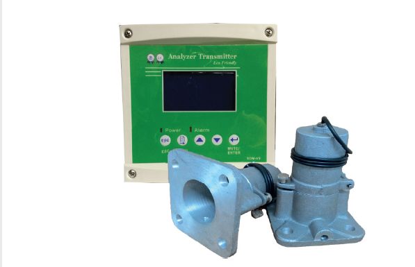

LKS is a Malaysian based company incorporated in early 1998. Today it is a growing engineering company specializing in Instrumentation & Valve, Continuous Emission Monitoring Systems, Online Effluent Monitoring Systems, Dust Analyzer Systems, Total Boiler Control Systems, Tank Gauging Systems, Plant-Wide Monitoring Systems, Water Treatment Control Systems, Gas Analyzer Monitoring Systems, Telemetry Control System and Industrial Automation Systems.

D10.3 is a measuring device which combines the advantages of transmittance and forward scattered light. Therefore, it is ideal for measurement of very low to high dust concentrations. The automatic self-alignment optimizes the position of the measuring beam and prevents incorrect measurement. The device also has an automatic check of zero and reference points. The sender uses a light emitting diode as its source of light.


Dust & Opacity Analyzer (Single Pass)
Measuring Principle :
D10.3 is a type-approved measuring device which combines the advantages of the measuring principles transmittance and scattered light forward. Therefore, it is ideal for measurement of very low to high dust concentrations. The automatic self-alignment optimized the position of the measuring beam and prevents incorrect measurement. An automatic check of zero and reference points as well as a contamination monitoring

Features
- Combination of transmittance and scattered light measurement
- For very low to high dust concentrations
- Automatic check of zero and reference point
- Contamination monitoring and compensation on both sides
- Automatic self-alignment
- For medium to large dust diameter
- CE mark by TUV
Benefit
- Combination of transmittance and scattered light measurement
- For very low to high dust concentrations
- Automatic check of zero and reference point
- Contamination monitoring and compensation on both sides
- Automatic self-alignment
- For medium to large dust diameter
- CE mark by TUV
Application
- Solid Fuel Boiler
- Tunnel for Visibility
- Gas Fuel Boiler
- Generator Emission
- Diesel Car Emission
- Rubbish Incinerator